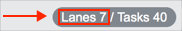

Configuring Visual Task Boards
| |
Note: This article applies to Fuji. For more current information, see Configure the Task Board at http://docs.servicenow.com
The Wiki page is no longer being updated. Please refer to http://docs.servicenow.com for the latest product documentation. |
Contents
1 Overview
Any board member can edit various configuration options for a task board. Some options impact all board members, while others only impact the current user.
2 Board Configuration Menu
The board configuration menu provides several options that affect the look and feel of the board. To access this menu, click the board configuration menu icon ( starting with Fuji,
starting with Fuji,  in Eureka) in the top-right corner of the board.
in Eureka) in the top-right corner of the board.
An option is enabled when the switch is moved to the right and appears with a green background.
{kind=link}
2.1 Setting a Background Color
The background color surrounds the lane area of a board. It also appears as the color for the board on the My Task Boards homepage. Select any color from the palette. Changes to the background color apply to all users.
2.2 Configuring View Options
These view options are available. Changes to the view apply to the current user only.
- Compact Lanes: When enabled, lane width is decreased.
- You can also toggle this switch by clicking Lanes in the top-right corner of the board interface in Eureka.
- 
- Compact Tasks: When enabled, task details do not appear on the card. Details usually include information like the task state, date opened, and last user to update it.
- You can also toggle this switch by clicking Tasks in the top-right corner of the board interface in Eureka.
- Cover Image: When enabled, cards display the first image attached to that card as a cover image.
- Previous Activity: When enabled, the Activity stream displays the previous value for values that changed.
{kind=link}
2.3 Configuring Quick Panel Options
These quick panel options are available.
- Show Panel: When enabled, the quick panel is visible. This setting applies to the current user only and is available starting with the Fuji release.
- Member Names: When enabled, user names appear by user avatars in the quick panel. This setting applies to the current user only.
- Show Labels: When enabled, labels appear on cards and in the quick panel. This setting applies to all users.
- Label Names: When enabled, the label name appears beside the colored icon for that label in the quick panel. This setting applies to the current user only and is available only when Show Labels is enabled.
When all the options are enabled, a quick panel looks like this:
{kind=link}
3 Configuring Labels
You can use up to five labels per board. Any board member can edit the labels on a board, assuming labels are enabled in the board configuration menu. You can disable or rename labels using the labels tab of the activity stream starting with the Fuji release. If you are using visual task boards in Eureka, see the previous version information.
To edit labels:
- Open the activity stream.
- Click the labels tab.
- Click Edit.
- Click the label text to change the label name.
- Click the switch by a label to disable or enable that label for the current board.
- When a label is disabled, members cannot add that label to cards on the board. Cards that are already labeled are not affected.
{kind=link}
| Click the plus to expand previous version information |
|---|
|
To edit labels:
|